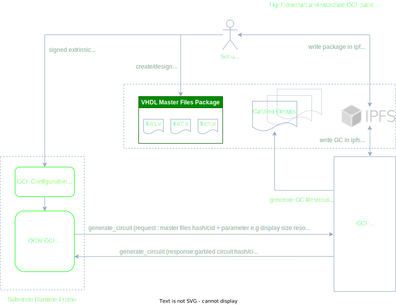

Garbled Cicuit Factory API
Flowchart and substrate GCF pallets

APIs
This is a list of APIs used in substrate framework to pilot the generation of the Garbled Circuits needed by the Interstellar infrsstructure.
-
Launh circuit production from OCW on GCF (external service)
-
generate_circuit: api_circuits/src/circuit_routes.rs:17Request: start the circuit(s) generation
Response: get hash/cid of the circuit on ipfs
Status:
-
source: circuit_route.rs
use tonic::{Request, Response, Status}; use interstellarpbapicircuits::circuits_api_server::CircuitsApi; use interstellarpbapicircuits::circuits_api_server::CircuitsApiServer; use interstellarpbapicircuits::CircuitReply; use interstellarpbapicircuits::Empty; pub mod interstellarpbapicircuits { tonic::include_proto!("interstellarpbapicircuits"); } #[derive(Default)] pub struct CircuitsServerImpl {} #[tonic::async_trait] impl CircuitsApi for CircuitsServerImpl { async fn generate_circuit( &self, request: Request<Empty>, ) -> Result<Response<CircuitReply>, Status> { println!("Got a request from {:?}", request.remote_addr()); // TODO call the C++ wrapper // TODO store into IPFS let ipfs_hash = "123456"; let reply = CircuitReply { hash: format!("Hello {}!", ipfs_hash), }; Ok(Response::new(reply)) } }